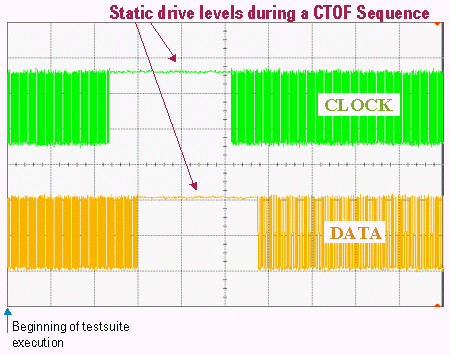

Reload of Primary Sets
The following figure shows the signals of the clock and the data pin if the level and timing related primary sets for these pins are reloaded for example, if you use the "NEVER" parameter of the FTCG command).
On both pins the reload is associated with a CTOF sequence.
For a certain time during the CTOF sequence the driver drives only a static level.

Functional changes
- Introduced before SmarTest 6.3.2